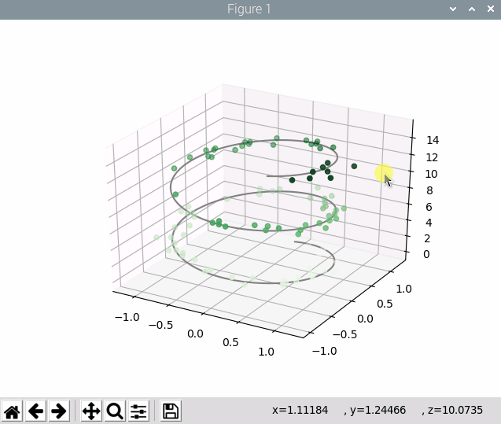
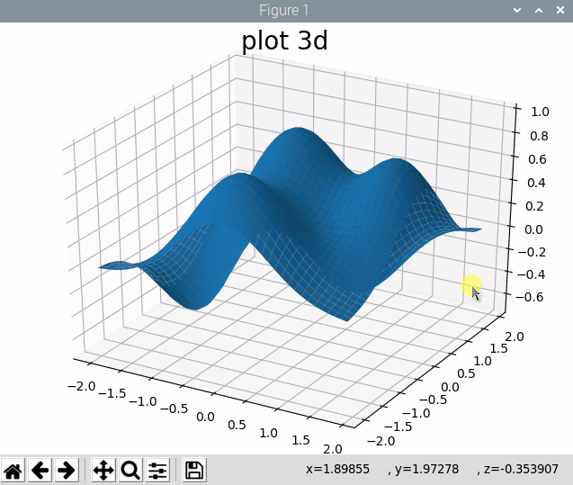

Matplotlib plot 3D Data
以3D图形的形式显示3D数据，例如一些3轴传感器的旋转过程中产生的3D数据
参考文档
install
sudo pip3 install matplotlib
点线绘制
#!/usr/bin/python3
import matplotlib.pyplot as plt
from mpl_toolkits.mplot3d import Axes3D
import numpy as np
ax = plt.axes(projection='3d')# Data for a three-dimensional line
zline = np.linspace(0, 15, 1000)
xline = np.sin(zline)
yline = np.cos(zline)
ax.plot3D(xline, yline, zline, 'gray')# Data for three-dimensional scattered points
zdata = 15 * np.random.random(100)
xdata = np.sin(zdata) + 0.1 * np.random.randn(100)
ydata = np.cos(zdata) + 0.1 * np.random.randn(100)
ax.scatter3D(xdata, ydata, zdata, c=zdata, cmap='Greens');
plt.show()

面绘制
#!/usr/bin/python3
import matplotlib.pyplot as plt
from mpl_toolkits.mplot3d import Axes3D
import numpy as np
def f(x, y):
return (1 - y**5 + x**5)*np.exp(-x**2-y**2)
fig = plt.figure()
ax = Axes3D(fig)
X = np.arange(-2, 2, 0.1)
Y = np.arange(-2, 2, 0.1)
X, Y = np.meshgrid(X, Y)
ax.plot_surface(X, Y, f(X,Y), rstride=1, cstride=1)
plt.title("plot 3d", fontsize=20, fontname="Times New Roman")
plt.show()
